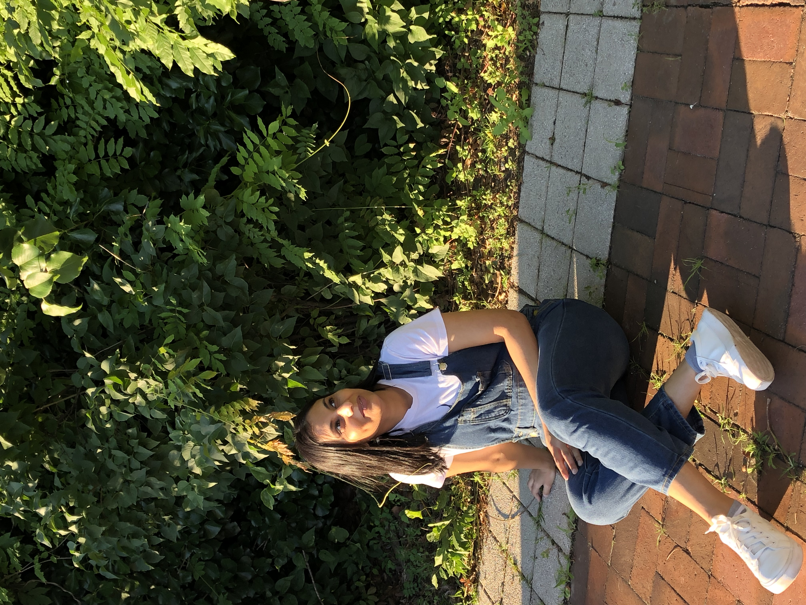

Career Coach/Career Mentor– SEO
A nonprofit organization dedicated to providing educational and career support for underrepresented and underserved students,
helping them achieve professional success through mentorship, internships, and leadership programs.
- Provide career guidance and mentorship to students from underrepresented backgrounds pursuing careers in technology.
- Collaborating with program staff to align mentorship goals with student career tracks, ensuring a tailored and effective experience.
- Mentored 20+ clients on job search and interview prep.
- Led mock interviews focused on tech and soft skills.
Digital Marketing Apprentice – Accdium
An online apprenticeship platform that connects aspiring digital marketers with businesses to gain real-world experience,
offering hands-on training in social media, SEO, content creation, and other marketing skills.
- Wrote ad copy for a research initiative, successfully driving participant recruitment for interviews.
- Created and managed social media content across platforms, increasing engagement and follower growth by leveraging analytics and aligning with brand voice.
- Created content aligned with brand voice and UX best practices.
- Conducted competitor analysis and provided strategic insights for digital growth opportunities.
- Crafted persuasive and targeted ad copy for a nail fungus clinic research initiative, successfully attracting participants for interviews to support valuable data collection and insights.
- Generated strategic LinkedIn post ideas to increase brand visibility, grow follower base, and boost engagement.
Scrum Master – P1 Games
A gaming company specializing in interactive entertainment experiences, where teams work cross-functionally on game design,
user engagement, and technology solutions for improved gameplay and user satisfaction.
- Facilitated Agile ceremonies, including daily stand-ups, sprint planning, retrospectives, and reviews, to ensure efficient team collaboration and alignment.
- Managed cross-functional projects involving UX, design, QA, and marketing to improve engagement features.
- Promoted agile principles and team collaboration.
- Coordinated stakeholder feedback loops, prioritizing tasks aligned with quarterly goals.
- Managed stakeholder expectations by providing regular updates on project milestones, risks, and resolutions.
Software Engineer – Weight Watchers
A global wellness and weight management company focused on empowering people to live healthier lives through scientifically backed nutrition
and behavior change programs, supported by digital tools and community engagement.
- Built front ends for multiple projects, including accessibility features, subscription flows, account settings, checkout redesign, and self-cancellation features
- Led and executed accessibility project, adhering to WCAG guidelines, ensuring the site was fully accessible for users with disabilities
- Worked cross-functionally on accessible user flows.
- Created detailed technical documentation for other developers in the team and admin audiences, including statements of work, integration documentation, flow charts, and diagrams.
- Tracked and resolved complex technical issues post-implementation and issues that came up during implementation, ensuring a seamless user experience.
Education Intern – Park Avenue Armory
A renowned New York City cultural institution and nonprofit arts center, known for presenting
unconventional and large-scale performances, exhibitions, and educational programs that engage the local community and schools.
- Designed educational materials tailored for K–12 students attending arts-based programs and exhibits.
- Coordinated logistics for public events and school visits with 400–500 attendees, including supply management and on-site setup.
- Collaborated with teaching artists to organize and facilitate interactive learning experiences.
- Conducted research on featured artists and exhibitions to develop accessible learning concepts and contextual guides for students.
- Managed administrative tasks including maintaining spreadsheets, creating mailing lists, and supporting day-to-day office operations.
Event Assistant – iMentor
A nonprofit organization that builds mentoring relationships to empower high school students from low-income communities to
graduate, succeed in college, and achieve their ambitions through guidance and support.
- Supported the planning and execution of large-scale events with 600+ mentor and mentee attendees..
- Handled logistical operations including venue setup, material preparation, and post-event breakdown.
- Created and distributed tailored resources to help mentors effectively support high school students.
- Provided administrative support, including data entry, materials coordination, and communication with event stakeholders.
A unique social media platform for the Marcy Lab family that lets users interact without focusing on follower counts or likes. MarcyGram encourages authentic connections by limiting likes and removing visible follower numbers, helping users engage without social pressure.
Collaborated with one other developer.
View CodeCommunity-based application enabling users to create and RSVP to events focused on driving positive social change.
Collaborated with two other developers
Built an interactive, two-player Connect Four game using HTML, CSS, and JavaScript.
Features a responsive 7x6 grid, turn-based play, win detection, and a reset option. Fully playable in any modern browser.
Collaborated with one other developer
- HTML5
- CSS3 (Flexbox)
- JavaScript
- Python
- Node.js
- PostgreSQL,MongoDB (CRUD, schema design basics)
- RESTful APIs
- Responsive Design
- JSON
- Postman
- Basic Authentication (JWT, OAuth)
- AWS
- Heroku
- GitLab
- Git
- GitHub
- CLI tools, Bash scripting
- Docker
- Scrum /li>
- Kanban
- Waterfall
- Backlog Grooming
- Roadmapping
- Stakeholder Management/Communication & Cross-functional Collaboration
- Sprint Planning
- Daily Standups
- Retrospectives
- Backlog Grooming
- User Stories
- Roadmapping
- Issue Tracking
- Team Facilitation & Servant Leadership
- Figma
- Canva
- Miro
- Microsoft Office Suite (Excel, Word, PowerPoint, Outlook)
- Google Workspace, WordPress, Notion
- Airtable
- Squarespace
- Medium
- Slack
- Zoom
- Trello
- Asana
- Monday.com
- ClickUp
- Jira
- Confluence
- GitHub
- Ad Copywriting
- Content Strategy
- Competitor & Market Research
- Email Marketing & Newsletters
- Audience Targeting & Segmentation
- Content Calendar Planning
- Technical Writing
- Flowcharts, Statements of Work (SOWs)
- User Guides & Manuals
- Meeting Minutes & Reports
- Content Organization & Structuring
- Stakeholder Communication
- Communication (Written & Verbal)
- Leadership & Mentorship
- Problem Solving
- Adaptability
- Collaboration & Teamwork
- Time Management
- Project Planning & Execution
- Attention to Detail
- Strategic Thinking
- Continuous Improvement Mindset
- Empathy & User-Centered Thinking
- Initiative & Self-Motivation
- Conflict Resolution
- Active Listening
- Networking & Relationship Building
- Curiosity & Growth Mindset
Bachelors in Business Administration & Management
Graduated with Technical Diploma in Computer Science
Graduated with Associates in Computer Science
Issued by Scrum Alliance – Demonstrates expertise in Agile project management and scrum principles.
Specialized in SEO, content strategy, and ad copywriting using AI-driven tools.
A volunteer-based nonprofit organization that provides free tutoring and mentorship to underserved college students and adult learners across New York City, aiming to close
achievement gaps and improve career readiness through personalized academic and professional support.
Providing Mentoring to college students , since June 2024
- Provide career guidance and mentorship to students from underrepresented backgrounds pursuing careers in technology.
- Led mock interviews focused on tech and soft skills.
- Mentoring college students pursuing careers in tech, guiding resumes, interviews, and skill development
- Supporting mentees through job application processes and shared industry insights to build their confidence and readiness.
An innovative, tuition-free alternative to college offering an intensive software engineering fellowship for high-potential young adults from underserved communities,
focused on equipping students with technical skills, professional development, and mentorship to launch successful tech careers.
Mentoring with Marcy Lab School Fellows, since November 2022
- Provide career guidance and mentorship to students from underrepresented backgrounds pursuing careers in technology.
- Collaborating with program staff to align mentorship goals with student career tracks, ensuring a tailored and effective experience.
- Led mock interviews focused on tech and soft skills.
- Mentoring a cohort of students pursuing careers in tech, guiding resumes, interviews, and skill development.